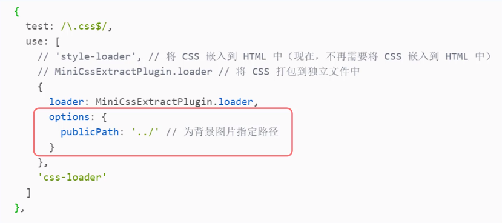
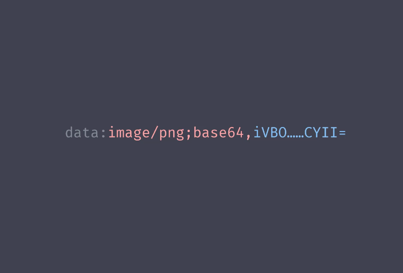
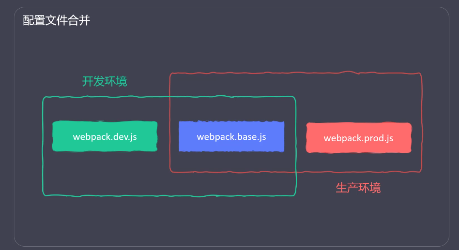
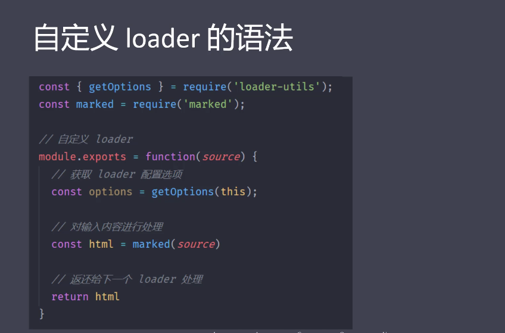
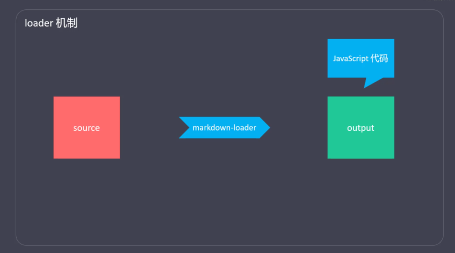

webpack(二)
基础
- 打包CSS
- 打包HTML
- 打包JS
- 打包图片
- 打包字体
- 资源模块（Asset Modules）
- 开发服务器（Dev Server）
打包CSS
- 打包逻辑
- 打包LESS
- 打包成独立的CSS文件
- 添加样式前缀
- 格式校验
- 压缩CSS
webpack 打包CSS
- 非JS文件打包，需要对应的loader
- css-loader将CSS转化为JS（将CSS输出到打包后的JS文件中）
- style-loader 把包含CSS内容的JS代码，挂载到页面的
<style>标签中
- 引入CSS （import “./css/main.css”）
- 安装（npm i css-loader style-loader -D）
- 配置
- 引入less
- import “./css/main.less”
- 安装
- npm i less less-loader -D
- 配置
- 安装插件
- npm install mini-css-extract-plugin -D
- 引入插件（webpack.config.js）
- const MiniCssExtractPlugin = require(‘mini-css-extract-plugin’);
- 替换 style-loader (use: [‘MiniCssExtractPlugin.loader’,’css-loader’])
- style-loader: 把CSS打包到
<style>标签中 - MiniCssExtractPlugin.loader: 将CSS打包到独立文件中
- style-loader: 把CSS打包到
- 配置插件（new MiniCssExtractPlugin({})）
- 官网 https://www.npmjs.com
添加样式前缀
- 安装
- npm install postcss-loader autoprefixer -D
- 配置 webpack.config.js
- use: [‘MiniCssExtractPlugin.loader’,’css-loader’,’postcss-loader’]
- 新建postcss.config.js
- plugins: [require(‘autoprefixer’)]
- 配置需要兼容的浏览器
- package.json 中指定 browserslist
- 详情参考：https://www.npmjs.com/package/browserslist

校验CSS代码格式
- 安装
- npm i stylelint stylelint-config-standard stylelint-webpack-plugin -D
- 引入
- const StylelintPlugin = require(‘stylelint-webpack-plugin’);
- 配置
- new StylelintPlugin({})
- 指定校验规则（在package.json 中指定stylelint ）
- “stylelint”: {“extends”: “style-config-standard”}
- stylelint
- https://stylelint.io
- 校验规则（number-leading-zero）
- line-height: .5; 错误
- line-height: 0.5; 正确
- stylelint-config-standard
- stylelint-webpack-plugin
- 安装
- npm install optimize-css-assets-webpack-plugin -D
- 引入
- OptimizeCssAssetsPlugin = require(‘optimize-css-assets-webpack-plugin’);
- 配置
- html-webpack-plugin
- 生成HTML文件（用于服务器访问），并在HTML中加载所有的打包资源
- 指定HTML模板、设置HTML变量、压缩HTML
- 安装
- npm install html-webpack-plugin -D
- 配置
- EJS
- https://ejs.bootcss.com/#install
- 高效的嵌入式 JavaScript 模板引擎
打包JS
编译JS
- 目的
- 将 ES6+ 转成 ES5，从而保证，JS在低版本浏览器的兼容性
- 安装
- npm install babel-loader @babel/core @babel/preset-env -D
- 配置
- @babel/preset-env 只能转译基本语法（Promise就不能转换）
- @babel/polyfill(转译所有JS新语法)
- npm i @babel/polyfill -D
- import ‘@babel/polyfill’ (入口文件中引入)
- core-js (按需转译JS新语法)
- 安装
- npm i eslint eslint-config-airbnb-base eslint-webpack-plugin eslint-plugin-import -D
- eslint (校验JS代码格式的工具)
- eslint-config-airbnb-base (最流行的JS代码格式规范)
- eslint-webpack-plugin (webpack 的 eslint 插件)
- eslint-plugin-import
- 用于在package.json 中读取 eslintConfig 配置项
- 配置
- file-loader
- 将用到的图片复制到输出目录，过滤点不用的图片
- npm i file-loader -D
- https://www.npmjs.com/package/file-loader
- 处理css中的图片路径（例如：背景图片加载失败）

- url-loader
- 是file-loader 的升级版，如果图片小于配置大小，会转成base64位字符串
- 转成base64字符串后，图片会跟JS一起加载（减少图片的请求次数）
- npm install url-loader -D
- https://www.npmjs.com/package/url-loader


- html-loader
- 将HTML导出为字符串（负责引入img,从而能被url-loader进行处理）
- npm i -D html-loader
- https://npmjs.com/package/html-loader
- html-loader 与 html-webpack-plugin 的冲突
- 字体文件
- file-loader
- test: /.(eot|svg|ttf|woff|woff2)$/i
- copy-webpack-plugin
- 不需要处理的其他文件，可以直接复制到输出目录
- https://www.npmjs.com/package/copy-webpack-plugin
- clean-webpack-plugin (每次打包之前，先删除历史文件)
- https://www.npmjs.com/package/clean-webpack-plugin
资源模块（Asset Module）
- https://www.npmjs.com/package/clean-webpack-plugin
- 功能：
- 资源模块是一种模块类型，它允许使用
资源文件，而无需配置额外loader - 资源文件：字体、图片、图标、HTML……
- 不用file-loader、url-loader也能加载图片和字体
- 资源模块是一种模块类型，它允许使用
- 详情：
- webpack 4
- raw-loader (将文件导入为字符串)
- file-loader （将文件发送到输出目录）
- url-loader（将文件发送到输出目录，或转为Data URI内联到bundle中）
- Webpack 5
- 作用：发布web服务，提高开发效率
- 详情：
- 使用
- Webpack 4: webpack-dev-server …
- Webpack 5: webpack serve …
- 热更新
- Webpack 4
- hot: true
- Webpack 5
- liveReload: true (禁用hot)
- target: ‘web’ (热更新只适用于web相关的targets)
- Webpack 4
- proxy (配置接口代理)
- 解决webpack-dev-server 下，访问接口的跨域问题
eg:https://api.github.com/users进阶
- 解决webpack-dev-server 下，访问接口的跨域问题
- 区分打包环境
- 自定义plugin
- 自定义loader
- 代码分离（Code Splitting）
- 源码隐射（Source Map）
- 删除亢余代码（Tree Shaking）
- 缓存
- 模块解析（resolve）
- 排除依赖（external）
- 模块联邦
区分环境打包
- 通过环境变量区分
- webpack –env.production
- webpack.config.js中判断env

- 通过配置文件区分
- 命令行中设置环境变量
- webpack 4: webpack –env.production
- webpack 5: webpack –env production
- webpack.config.js
- 读取环境变量 env.production
- 根据环境变量指定不同的配置

- 详情
- https://www.webpackjs.com/guides/environment-variables/
webpack 通过配置文件区分打包
- https://www.webpackjs.com/guides/environment-variables/
- 通过配置文件区分环境
- webpack.dev.conf.js (mode:development)
- webpack.prod.conf.js (mode:production)
- webpack.base.conf.js(公共配置)
- webpack-merge
- 将多个配置合并在一起
- npm i -D webpack-merge
- https://www.npmjs.com/package/webpack-merge
webpack DefinePlugin
- DefinePlugin
- webpack 插件是一个具有apply方法的JavaScript对象。apply方法会被webpack compiler调用，并且在整个编译生命周期都可以访问compiler对象。
- 原理：
- 通过在生命周期的钩子中挂载函数，来实现功能扩展
- 详情：
- 生命周期
- 生命周期就是整个生命过程中的关键节点
- 人：出生->上学->毕业->结婚->生子->end
- 钩子
- 钩子是提前在可能增加功能的地方，埋好（预设）一个函数
- 生命周期中的函数
- 钩子是站点，在钩子中，可以挂载一些功能
- webpack 常用钩子
- Loader本质上就是一个ESM模块，它导出一个函数，在函数中对打包资源进行转换。
 - 声明一个读取markdown(.md)文件内容的loader
- marked(将markdown语法转成html) —-需安装
- loader-utils (接受loader配置项) —-需安装
- npm i -D marked loader-utils
